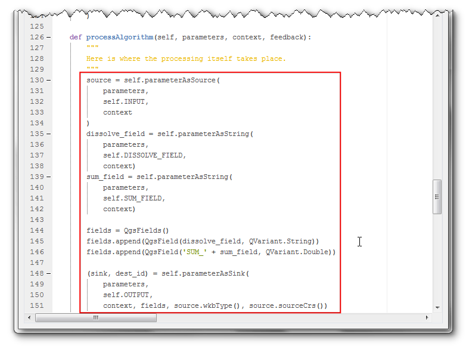
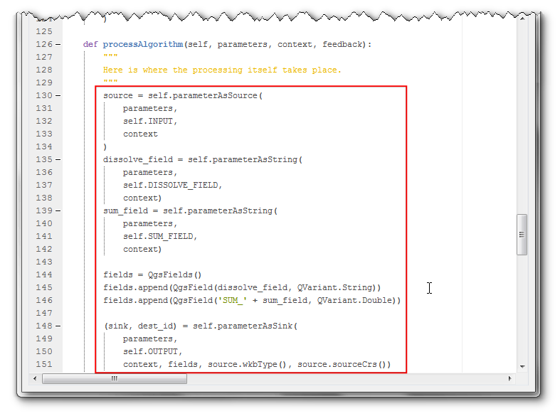

Python-scripts schrijven voor framework Processing (QGIS3)¶
Men kan zelfstandige scripts in Pyqgis schrijven die kunnen worden uitgevoerd in de Python Console in QGIS. Met een aantal aanpassingen kunt u uw scripts voor Pyqgis ook uitvoeren via het framework Processing. Dat heeft een aantal voordelen. Ten eerste is het invoeren van invoer door de gebruiker en het schrijven van uitvoerbestanden veel eenvoudiger omdat het framework Processing hier een gestandaardiseerde gebruikersinterface voor biedt. Ten tweede, door uw script te hebben in de Processing Toolbox kan het ook deel uitmaken van elk Model voor Processing of worden uitgevoerd als een Batch-taak met meerdere invoer. Deze handleiding zal laten zien hoe een aangepast script voor Python te schrijven dat deel kan uitmaken van het framework Processing in QGIS.
Notitie
De API voor Processing werd compleet vernieuwd in QGIS3. Bekijk deze gids voor beste manieren en tips.
Overzicht van de taak¶
Ons script zal een bewerking voor ontbinden uitvoeren, gebaseerd op een door de gebruiker gekozen veld. Het zal ook de waarden van een ander veld bij elkaar optellen voor de ontbonden objecten. In het voorbeeld zullen we een world shapefile ontbinden, gebaseerd op een attribuut CONTINENT en het veld POP_EST optellen om de totale bevolking in de ontbonden regio te berekenen.
De gegevens ophalen¶
We zullen de gegevensset Admin 0 - Countries van Natural Earth gebruiken.
Download het Admin 0 - countries shapefile..
Gegevensbron [NATURALEARTH]
Voor het gemak kunt u direct een Geopackage downloaden dat bovenstaande laag bevat vanaf de link hieronder:
Procedure¶
Zoek, in het paneel QGIS Browser, de map waar u uw gegevens hebt gedownload. Vergroot het item
zipofgpkgen selecteer de laagne_10m_admin_0_countries. Sleep de laag naar het kaartvenster.

Ga naar . Klik op de knop Scripts in de werkbalk en selecteer Nieuw script uit sjabloon maken.

De sjabloon bevat alle benodigde code die vereist is voor het framewerk Processing om het te herkennen als een script voor Processing, en invoer/uitvoer te beheren. Laten we beginnen met het aanpassen van het voorbeeldsjabloon naar onze wensen. Wijzig eerst de naam van de klasse van
ExampleProcessingAlgorithmnaarDissolveProcessingAlgorithm. Deze naam dient ook te worden bijgewerkt in de methodecreateInstance. Voeg een docstring toe aan de klasse die uitlegt wat het algoritme doet.

Als u naar beneden scrollt, zult u methoden zien die een naam, groep, beschrijving etc. toewijzen aan het script. Wijzig de terugkeerwaarden voor de methode name naar
dissolve_with_sum, methode displayName naarDissolve with Sum, methode group en methode groupId naarscripts. Wijzig de terugkeerwaarde van de methode shortHelpString naar een beschrijving die voor de gebruiker zal verschijnen. Klik op de knop Opslaan.

Noem het script
dissolve_with_sumen sla het op de standaard locatie op in de map .

Nu zullen we de invoer voor het script definiëren. De sjabloon bevat al een definitie voor een vectorlaag
INPUTen een laagOUTPUT. We zullen 2 nieuwe invoeren toevoegen die de gebruiker in staat stellen eenDISSOLVE_FIELDen eenSUM_FIELDte kiezen. Voeg een nieuwe import toe aan het begin en de volgende code in de methodeinitAlgorithm. Klik op de knop Uitvoeren om een voorbeeld van de wijzigingen te zien.
from qgis.core import QgsProcessingParameterField
self.addParameter(
QgsProcessingParameterField(
self.DISSOLVE_FIELD,
'Choose Dissolve Field',
'',
self.INPUT))
self.addParameter(
QgsProcessingParameterField(
self.SUM_FIELD,
'Choose Sum Field',
'',
self.INPUT))


U zult een dialoogvenster Dissolve with Sum zien met onze nieuw gedefinieerde invoeren. Selecteer de laag
ne_10m_admin_0_countriesals Input layer`. Omdat zowel Dissolve Field als Sum Fields worden gefilterd op basis van de invoerlaag, zullen zij vooraf worden gevuld met bestaande velden uit de invoerlaag. Klik op de knop Sluiten.

Nu definiëren we onze aangepaste logica voor het verwerken van gegevens in de methode
processAlgorithm. Deze methode wordt doorgegeven aan een woordenboek, genaamdparameters. Het bevat de invoer die de gebruiker heeft geselecteerd. Er zijn hulpmethoden die u in staat stellen deze invoeren te nemen en er toepasselijke objecten van te maken. We halen eerst onze invoer op met behulp van de methodenparameterAsSourceenparameterAsStrong. Vervolgens willen we een afvoer voor het object maken waar we de uitvoer naartoe zullen schrijven. QGIS3 heeft een nieuwe klasse, genaamdclassQgsFeatureSinkwat de voorkeursmanier is om objecten te maken die nieuwe objecten kunnen accepteren. De uitvoer heeft slechts 2 velden - één voor de waarde van het opgeloste veld en een ander voor de som van het geselecteerde veld.
from PyQt5.QtCore import QVariant
from qgis.core import QgsField, QgsFields
source = self.parameterAsSource(
parameters,
self.INPUT,
context)
dissolve_field = self.parameterAsString(
parameters,
self.DISSOLVE_FIELD,
context)
sum_field = self.parameterAsString(
parameters,
self.SUM_FIELD,
context)
fields = QgsFields()
fields.append(QgsField(dissolve_field, QVariant.String))
fields.append(QgsField('SUM_' + sum_field, QVariant.Double))
(sink, dest_id) = self.parameterAsSink(
parameters,
self.OUTPUT,
context, fields, source.wkbType(), source.sourceCrs())
 

Nu zullen we de objecten van de invoer lezen en een woordenboek maken dat de unieke waarden van het veld dissolve_field en de som van de waarden uit het veld sum_field bevat. Merk het gebruiken van de methode
feedback.pushInfo()op om de status te communiceren met de gebruiker.
feedback.pushInfo('Extracting unique values from dissolve_field and computing sum')
features = source.getFeatures()
unique_values = set(f[dissolve_field] for f in features)
# Get Indices of dissolve field and sum field
dissolveIdx = source.fields().indexFromName(dissolve_field)
sumIdx = source.fields().indexFromName(sum_field)
# Find all unique values for the given dissolve_field and
# sum the corresponding values from the sum_field
sum_unique_values = {}
attrs = [{dissolve_field: f[dissolveIdx], sum_field: f[sumIdx]} for f in source.getFeatures()]
for unique_value in unique_values:
val_list = [ f_attr[sum_field] for f_attr in attrs if f_attr[dissolve_field] == unique_value]
sum_unique_values[unique_value] = sum(val_list)

Vervolgens zullen we het ingebouwde algoritme van Processing
native:dissolveaanroepen op de invoerlaag om de opgeloste geometrieën te genereren. Als we enemaal de opgeloste geometrieënn hebben lopen we door de uitvoer van het algoritme Dissolve en maken we nieuwe objecten die moeten worden toegevoegd aan de uitvoer. Aan het einde geven we de FeatureSink op alsdest_idals de uitvoer. Nu is het script klaar. Klik op de knop Uitvoeren.
Notitie
Merk het gebruiken van ``parameters[self.INPUT]``op om de invoerlaag direct uit het woordenboek met parameters op te halen zonder het als een bron op te geven. Het is niet noodzakelijk om het als een bron te definiëren, omdat we het invoerobject doorgeven aan het algoritme zonder er iets mee te doen.
from qgis.core import QgsFeature
# Running the processing dissolve algorithm
feedback.pushInfo('Dissolving features')
dissolved_layer = processing.run("native:dissolve", {
'INPUT': parameters[self.INPUT],
'FIELD': dissolve_field,
'OUTPUT': 'memory:'
}, context=context, feedback=feedback)['OUTPUT']
# Read the dissolved layer and create output features
for f in dissolved_layer.getFeatures():
new_feature = QgsFeature()
# Set geometry to dissolved geometry
new_feature.setGeometry(f.geometry())
# Set attributes from sum_unique_values dictionary that we had computed
new_feature.setAttributes([f[dissolve_field], sum_unique_values[f[dissolve_field]]])
sink.addFeature(new_feature, QgsFeatureSink.FastInsert)
return {self.OUTPUT: dest_id}


Selecteer, in het dialoogvenster Dissolve with Sum,
ne_10m_admin_0_countriesals de Input layer,CONTINENTals het Dissolve field enPOP_ESTals het Sum field. Klik op Uitvoeren.

Klik, als de verwerking eenmaal is voltooid, op de knop Sluiten en schakel naar het hoofdvenster van QGIS.

U zult de uitvoerlaag met opgeloste objecten zien met één object voor elk continent en de totale bevolking opgeteld uit de individuele landen die tot dat continent behoren.

Een ander voordeel van het schrijvren van scripts voor Processing is dat de methoden binnen het Framewerk Processing zich bewust zijn van de keuze van lagen en automatisch uw invoer filteren om alleen de geselecteerde objecten te gebruiken. Dit gebeurt omdat we onze invoer definiëren als een
QgsProcessingParameterFeatureSource. Een objectbron staat het gebruiken toe van ELK object dat vectorobjecten bevat, niet alleen een vectorlaag, als er dus geselecteerde objecten op uw laag staan en u vraagt Processing om de geselecteerde objecten te gebruiken, wordt de invoer doorgegeven aan uw script als een objectQgsProcessingFeatureSourcedat de geselecteerde objecten bevat en niet de volledige vectorlaag. Hier is een snelle demonstratie van deze functionaliteit. Laten we zeggen dat we alleen bepaalde continenten willen oplossen. Laten we een selectie maken met behulp van het gereedschap Objecten selecteren met een expressie.

Voer de volgende expressie in om objecten te selecteren uit Noord- en Zuid-Amerika en klik op Selecteren.
"CONTINENT" = 'North America' OR "CONTINENT" = 'South America'

U zult de geselecteerde objecten zien, geaccentueerd in geel. Zoek het script
dissolve_with_sumop en dubbelklik er op om het uit te voeren.

Selecteer, in het dialoogvenster Dissolve with Sum,
ne_10m_admin_0_countriesals de Input layer. Zorg er deze keer voor dat het vak Alleen geselecteerde objecten is geselecteerd. KiesSUBREGIONals het Dissolve field enPOP_ESTals het Sum field. Klik op Uitvoeren.

Klik, als de verwerking eenmaal is voltooid op Sluiten en schakel terug naar het hoofdvenster van QGIS. U zult een nieuwe laag zien met alleen de opgeloste geselecteerde objecten. Klik op de knop Identificeren en klik op een object om te inspecteren en te verifiëren dat het script juist heeft gewerkt.

Hieronder staat het volledige script als verwijzing. U kunt het aanpassen zodat het aan uw eigen wensen voldoet.
# -*- coding: utf-8 -*-
"""
***************************************************************************
* *
* This program is free software; you can redistribute it and/or modify *
* it under the terms of the GNU General Public License as published by *
* the Free Software Foundation; either version 2 of the License, or *
* (at your option) any later version. *
* *
***************************************************************************
"""
from PyQt5.QtCore import QCoreApplication, QVariant
from qgis.core import (QgsProcessing,
QgsFeatureSink,
QgsFeature,
QgsField,
QgsFields,
QgsProcessingException,
QgsProcessingAlgorithm,
QgsProcessingParameterFeatureSource,
QgsProcessingParameterFeatureSink,
QgsProcessingParameterField,
)
import processing
class DissolveProcessingAlgorithm(QgsProcessingAlgorithm):
"""
Dissolve algorithm that dissolves features based on selected
attribute and summarizes the selected field by cumputing the
sum of dissolved features.
"""
INPUT = 'INPUT'
OUTPUT = 'OUTPUT'
DISSOLVE_FIELD = 'dissolve_field'
SUM_FIELD = 'sum_field'
def tr(self, string):
"""
Returns a translatable string with the self.tr() function.
"""
return QCoreApplication.translate('Processing', string)
def createInstance(self):
return DissolveProcessingAlgorithm()
def name(self):
"""
Returns the algorithm name, used for identifying the algorithm. This
string should be fixed for the algorithm, and must not be localised.
The name should be unique within each provider. Names should contain
lowercase alphanumeric characters only and no spaces or other
formatting characters.
"""
return 'dissolve_with_sum'
def displayName(self):
"""
Returns the translated algorithm name, which should be used for any
user-visible display of the algorithm name.
"""
return self.tr('Dissolve with Sum')
def group(self):
"""
Returns the name of the group this algorithm belongs to. This string
should be localised.
"""
return self.tr('scripts')
def groupId(self):
"""
Returns the unique ID of the group this algorithm belongs to. This
string should be fixed for the algorithm, and must not be localised.
The group id should be unique within each provider. Group id should
contain lowercase alphanumeric characters only and no spaces or other
formatting characters.
"""
return 'scripts'
def shortHelpString(self):
"""
Returns a localised short helper string for the algorithm. This string
should provide a basic description about what the algorithm does and the
parameters and outputs associated with it..
"""
return self.tr("Dissolves selected features and creates and sums values of features that were dissolved")
def initAlgorithm(self, config=None):
"""
Here we define the inputs and output of the algorithm, along
with some other properties.
"""
# We add the input vector features source. It can have any kind of
# geometry.
self.addParameter(
QgsProcessingParameterFeatureSource(
self.INPUT,
self.tr('Input layer'),
[QgsProcessing.TypeVectorAnyGeometry]
)
)
self.addParameter(
QgsProcessingParameterField(
self.DISSOLVE_FIELD,
'Choose Dissolve Field',
'',
self.INPUT))
self.addParameter(
QgsProcessingParameterField(
self.SUM_FIELD,
'Choose Sum Field',
'',
self.INPUT))
# We add a feature sink in which to store our processed features (this
# usually takes the form of a newly created vector layer when the
# algorithm is run in QGIS).
self.addParameter(
QgsProcessingParameterFeatureSink(
self.OUTPUT,
self.tr('Output layer')
)
)
def processAlgorithm(self, parameters, context, feedback):
"""
Here is where the processing itself takes place.
"""
source = self.parameterAsSource(
parameters,
self.INPUT,
context
)
dissolve_field = self.parameterAsString(
parameters,
self.DISSOLVE_FIELD,
context)
sum_field = self.parameterAsString(
parameters,
self.SUM_FIELD,
context)
fields = QgsFields()
fields.append(QgsField(dissolve_field, QVariant.String))
fields.append(QgsField('SUM_' + sum_field, QVariant.Double))
(sink, dest_id) = self.parameterAsSink(
parameters,
self.OUTPUT,
context, fields, source.wkbType(), source.sourceCrs())
# Create a dictionary to hold the unique values from the
# dissolve_field and the sum of the values from the sum_field
feedback.pushInfo('Extracting unique values from dissolve_field and computing sum')
features = source.getFeatures()
unique_values = set(f[dissolve_field] for f in features)
# Get Indices of dissolve field and sum field
dissolveIdx = source.fields().indexFromName(dissolve_field)
sumIdx = source.fields().indexFromName(sum_field)
# Find all unique values for the given dissolve_field and
# sum the corresponding values from the sum_field
sum_unique_values = {}
attrs = [{dissolve_field: f[dissolveIdx], sum_field: f[sumIdx]}
for f in source.getFeatures()]
for unique_value in unique_values:
val_list = [ f_attr[sum_field]
for f_attr in attrs if f_attr[dissolve_field] == unique_value]
sum_unique_values[unique_value] = sum(val_list)
# Running the processing dissolve algorithm
feedback.pushInfo('Dissolving features')
dissolved_layer = processing.run("native:dissolve", {
'INPUT': parameters[self.INPUT],
'FIELD': dissolve_field,
'OUTPUT': 'memory:'
}, context=context, feedback=feedback)['OUTPUT']
# Read the dissolved layer and create output features
for f in dissolved_layer.getFeatures():
new_feature = QgsFeature()
# Set geometry to dissolved geometry
new_feature.setGeometry(f.geometry())
# Set attributes from sum_unique_values dictionary that we had computed
new_feature.setAttributes([f[dissolve_field], sum_unique_values[f[dissolve_field]]])
sink.addFeature(new_feature, QgsFeatureSink.FastInsert)
return {self.OUTPUT: dest_id}
If you want to give feedback or share your experience with this tutorial, please comment below. (requires GitHub account)